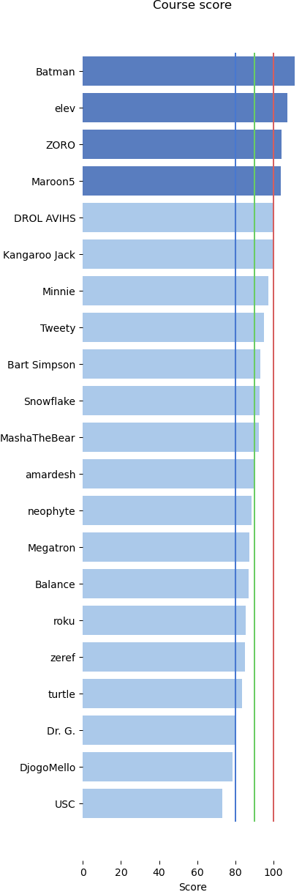
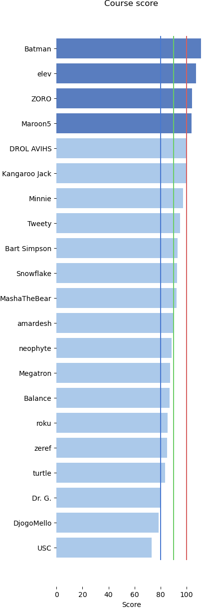

Design & Analysis: Algorithms
01: Introduction
Outline of the lecture
- Introductions
- Why Study Design and Analysys of Algorithms
- Algorithms Analysis
- Course Overview
Introductions
Instructor
Sergey Plis, Ph.D.
- Department of Computer Science,
- Georgia State University
- 55 Park Place, office 1821
- Office hours: MW 12:00-1:00 pm
in person or in class slack - Email: splis@gsu.edu
Grader
Anuska Sinha
- Department of Computer Science,
- Georgia State University
- 55 Park Place
- Comments: by appointment or
- Email: asinha14@student.gsu.edu
Algorithms
"The possibility of a science in which all the world is thought of computationally casts the study of computers in an important new light. As its practitioners are fond of saying, computer science is not about computers, any more than astronomy is about telescopes, or biology about microscopes. These devices are tools for observing worlds otherwise inaccessible.The computer is a tool for exploring the world of complex processes, whether they involve cells, stars, or the human mind. "
1986, Machinery of the Mind: Inside the New Science of Artificial Intelligence by George Johnson, Chapter 4: The Art of Programming, Quote Page 81 and 82, Times Books: A Division of Random House Inc., New York.
What's an algorithm?
A finite sequence of rigorous instructions, typically used to solve a class of specific problems or to perform a computation.Problem example
- given a set of locations on a map
- find the closest pair
What's an algorithm?
A finite sequence of rigorous instructions, typically used to solve a class of specific problems or to perform a computation.Example Problem:
- given a set of locations on a map
- find the closest pair
A Possible Algorithm:
- find distances between all pairs
- select the smallest
Is it a good algorithm? Can we do better?
Why study algorithms?
- Q: Can I get a programming job without knowing something about algorithms and data structures?
- A: Yes, but do you really want to be programming GUIs your entire life?
Want to program computer games?
Want to program computer games?
Q: I'M CURRENTLY IN A COMPUTER SCIENCE OR SOFTWARE/COMPUTER ENGINEERING PROGRAM. WHAT COURSES AT SCHOOL ARE MOST APPLICABLE FOR WORKING IN THE GAMES INDUSTRY?
- Linear Algebra
- Calculus
- Mathematical Logic
- Computer Graphics
- Abstract Data Types
- Algorithm Design and Analysis
- Machine Learning
- Artificial Intelligence
Why study algorithms?
- Almost all big companies want programmers with knowledge of algorithms: Microsoft, Google, Amazon, Meta, Oracle, IBM, etc.
- In most programming job interviews, they will ask you several questions about algorithms and/or data structures
- Your knowledge of algorithms will set you apart from the large masses of interviewees who know only how to program
- If you want to start your own company, you should know that many startups are successful because they’ve found better algorithms for solving a problem (e.g. Google, Akamai, etc.)
A company and an algorithm
A company and an algorithm
Clustering, neural nets, classification, and more
Why study algorithms?
- You’ll write better, faster code
- You’ll learn to think more abstractly and mathematically
- It’s the most challenging and interesting area of CS!
not understanding theory
understanding theory
understanding limits of theory
Algorithm Analysis
A Real Job Interview Question
- You are given an array with integers between $1$ and $1,000,000$.
- All integers between $1$ and $1,000,000$ are in the array at least once, and one of those integers is in the array twice
- Q: Can you determine which integer is in the array twice? Can you do it while iterating through the array only once?
Naive Algorithm
- Create a new array of ints between $1$ and $1, 000, 000$, which we'll use to count the occurences of each number. Initialize all entries to 0
- Go through the input array and each time a number is seen, update its count in the new array
- Go through the count array and see which number occurs twice.
- Return this number
Naive Algorithm Analysis
- Q: How long will this algorithm take?
- A: We iterate through the numbers $1$ to $1, 000, 000$ three times!
- Note that we also use up a lot of space with the extra array
- This is wasteful of time and space, particularly as the input array gets very large (e.g. it might be a huge data stream)
- Q: Can we do better?
A better Algorithm
- Iterate through the input array, summing up all the numbers, let $S$ be this sum
- Let $x = S − (1, 000, 000 + 1)1, 000, 000/2$
- Return $x$
Ideas for a better Algorithm
- Note that $\sum_{i=1}^n i = \frac{(n + 1)n}{2}$
- Let $S$ be the sum of the input array
- Let $x$ be the value of the repeated number
- Then $S = (1, 000, 000 + 1)1, 000, 000/2 + x$
- Thus $x = S − (1, 000, 000 + 1)1, 000, 000/2$
Analysis
- This algorithm takes iterates through the input array just once
- It uses up essentially no extra space
- It is at least three times faster than the naive algorithm
- Further, if the input array is so large that it won’t fit in memory, this is the only algorithm which will work!
- These time and space bounds are the best possible
Take Away
- Designing good algorithms matters!
- Not always this easy to improve an algorithm
- However, with some thought and work, you can almost always get a better algorithm than the naive approach
Course Overview
Content
- Data structures, sorting, compression: sorting, hashing, priority queues, binary search trees, coding, compression
- General algorithmic methods: divide and conquer, greedy algorithms, dynamic programming
- Combinatorial problems: Eulerian cycle, MST, Shortest Path, PageRank, Matchings, Network Flows and Minimal Cuts
- Computational Complexity: NP-completeness, reducibility
- Heuristics and approximation algorithms: Bin packing, TSP, branch-and-bound, local search, tabu search, Maxcut, coloring, IS, vertex covers
Grade Strategy
- 45% - Homework
- 20% - Midterm
- 30% - Final
- 5% - Attendance & Participation
Relative Ranking
 

prerequisites
- Ability to program in python (preferred)
- Fundamental principles of computer programming. Expressions, procedures, variable types, data, input/output
- Basic data structures: arrays, lists, trees, etc
- Basics of combinatorics and discrete mathematics, including sets, relations and functions, familiarity with proofs, including proofs by induction and by contradiction
- We will brush up on most of that but will not slow down for what you already expected to know
Reading Material

Cormen, T.H., Leiserson, C.E., Rivest, R.L. and Stein, C., 2022. Introduction to algorithms. MIT press.
Other relevant material that I may consult:
- Kleinberg, J. and Tardos, E., 2006. Algorithm design. Pearson Education India.
- Hetland, M.L., 2014. Python Algorithms: mastering basic algorithms in the Python Language. Apress.
Background reading

Graham, R.L., Knuth, D.E., Patashnik, O. and Liu, S., Concrete mathematics: a foundation for computer science